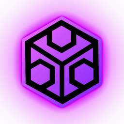

Anima en 3D y 2D
desde tu móvil.
ATLAS 5D es un programa de animación completo para Android y Windows: personajes con huesos, modelado, materiales, estilos de imagen, render de cine y vídeo MP4. Gratis.
Última versión: cargando…
Todo para animar, en un solo programa.
Pensado para la pantalla táctil y también para ratón y teclado en el PC, con interfaz de escritorio.
Animar
Fotogramas clave con línea de tiempo, editor de curvas con tiradores, estirar claves en el tiempo, bucles, copiar y pegar claves y animar los efectos de imagen.
Personajes con huesos
Modo pose con línea de tiempo por hueso, cinemática inversa (IK), modo espejo, expresiones guardadas, labios con la voz, huesos con rebote y copiar animaciones entre personajes.
Modelar y esculpir
Vértices, aristas y caras: extruir, bisel, cuchillo, corte en bucle, puente, rellenar agujeros, dar grosor, subdividir, espejo, curvas con grosor y editor UV.
Materiales y shading
Editor de materiales con vista previa, normal maps, emisión, texturas generadas (madera, mármol, ladrillos, nubes…), mezclas con máscara y biblioteca «Mis materiales».
Estilos de imagen
Spider-Verse, anime, cómic, contorno de tinta, póster, pintura, boceto, retro y VHS. Encima: lente sucia, polvo, película antigua, pixelado, gran angular y etalonaje de cine.
Escenas y luz
Ambientes listos, cielo con hora del día o tu propia imagen 360°, luces y focos con volumen, agua, terreno, clima animado, partículas y física con gravedad.
Render y vídeo
Render «Cine» con desenfoque de lente y de movimiento, renderizado progresivo, vídeo MP4 con todos los sonidos, GIF, secuencias PNG y cortes entre cámaras.
Importa de todo
GLB/glTF, FBX, OBJ, 3DS, BLEND, STL, PLY, modelos de Source (MDL, PCF, GMA), Prisma3D y Minecraft (Blockbench y Bedrock). Exporta a GLB, OBJ, STL y más.
Para cualquier móvil
Resolución automática cuando el móvil va lento, ahorro de batería en reposo, texturas ajustadas a la memoria del teléfono y perfiles de calidad. Español, inglés y árabe.
¿Por qué «5D»?
Porque son dos programas en uno: ATLAS 3D para animar en tres dimensiones y Artlas 2D para dibujar y animar a mano, en la misma app.
- Artlas 2D: capas, carpetas, papel cebolla, pinceles y relleno con cierre de huecos.
- Rotoscopia: importa un vídeo y dibuja encima, cuadro a cuadro.
- Personajes por piezas con punto de giro, efectos de capa y labios automáticos.
- Exporta MP4 con audio, GIF o secuencia PNG transparente.
Descargar
Siempre la versión más nueva. Gratis y sin cuenta.
Android
- Descarga el archivo ATLAS5D-Android.apk.
- Ábrelo. Si el teléfono lo pide, permite «instalar apps de origen desconocido».
- Las versiones nuevas se instalan encima: no pierdes tus proyectos.
Windows
- Descarga ATLAS5D-Windows.zip y descomprímelo en una carpeta.
- Abre ATLAS3D.exe. Si Windows avisa, pulsa «Más información» → «Ejecutar de todas formas».
- La carpeta ffmpeg que viene dentro sirve para crear los vídeos MP4: no la borres.
¿Versiones anteriores? Están todas en la lista de versiones. ¿Encontraste un error? Dentro de la app: menú → «Informar de un error».
Novedades
Lo último que ha llegado a ATLAS 5D.
1.15
- «Pasar a claves»: la animación de un modelo se convierte en claves editables.
- «Aspecto realista» con un toque.
1.14
- Nuevo objeto Curva: un tubo que pasa por puntos, con grosor, lados, aro y puntas finas.
1.13
- Texturas generadas: madera, mármol, ladrillos, nubes, cuadros, rayas y más, sin cortes.
- Mezclar texturas con máscara y copiar/pegar materiales.
1.12
- Vídeo MP4 también en PC, con todos los sonidos.
- Animar los efectos de imagen, quitar huesos y arreglos de normal maps y del render.
1.11
- Estilos de imagen: Spider-Verse, anime, pintura, boceto y más.
- Versiones anteriores del proyecto e informe de errores dentro de la app.
1.10
- Editor de curvas, estirar claves, rellenar agujero, puente y grabar voz.